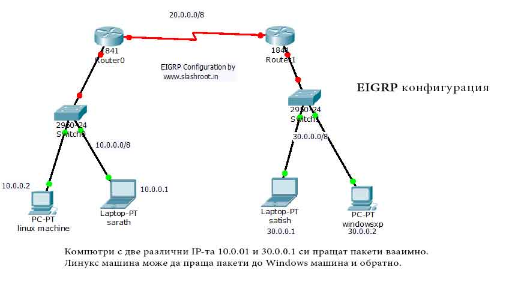

Обща информация за протокол EIGRP
EIGRP Enhanced Interior Gateway Routing Protocol (Разширен вътрешен маршрутизиращ протокол) е разработен от Cisco Systems. От 2013 година насам, EIGRP е отворен стандарт, а от компанията мотивират решението си с думите, че вече всеки клиент ще може сам да прецени кой протокол би му свършил най-добра работа, базирано, на вече общодостъпните, технически детайли и характеристики на стандарта.
Протоколът е базиран на IGRP (вътрешен маршрутизиращ протокол), като са въведени много подобрения. Конфигурирането му е подобно на IGRP, но с много характеристики отнасящи се до състоянието на връзката (link-state), които са добавени, за да позволят на EIGRP да обслужва по-големи корпоративни мрежи.

Тези характеристики включват:
- - Бърза конвергенция - времето, което отнема, за да се обработят промените в мрежата и да се влезе отново в оперативен режим
- - Свободна от цикли (loops) топология
- - VLSM - вариращи по дължина събнет маски и обобщение на маршрутите
- - Многоплатформен и многопротоколен (Multicast)
- - Намиране на маршрути едновременно за няколко маршрутизиращи протоколи (routed protocols)

- - Архитектурата на EIGRP е модулна - разработен е компонентно
- - За разлика от други протоколи EIGRP изпраща само инкрементални обновления, като по този начин намалява натоварването на маршрутизатора и количеството данни, които трябва да се изпратят
- - Както вече споменах, през 2013 година EIGRP бе превърнат в отворен стандарт, защото е публкуван с информационен статут като RFCRFC, което ще рече, че Cisco дават публичен достъп до използваните методи за разработката на протокола, както и обяснения за поведението му. Като за това може да се уверим тук
Преди да навляза в подробности за EIGRP, нека се запознаем накратко с причините за появяването на протокола и кратка история.
А ако желаете малко повече информация за формата на съобщението тук.